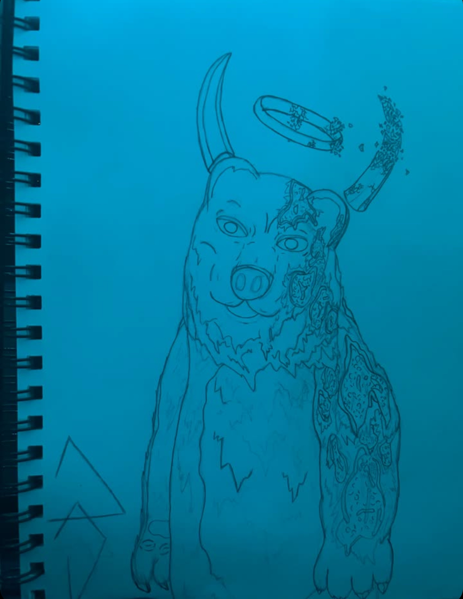
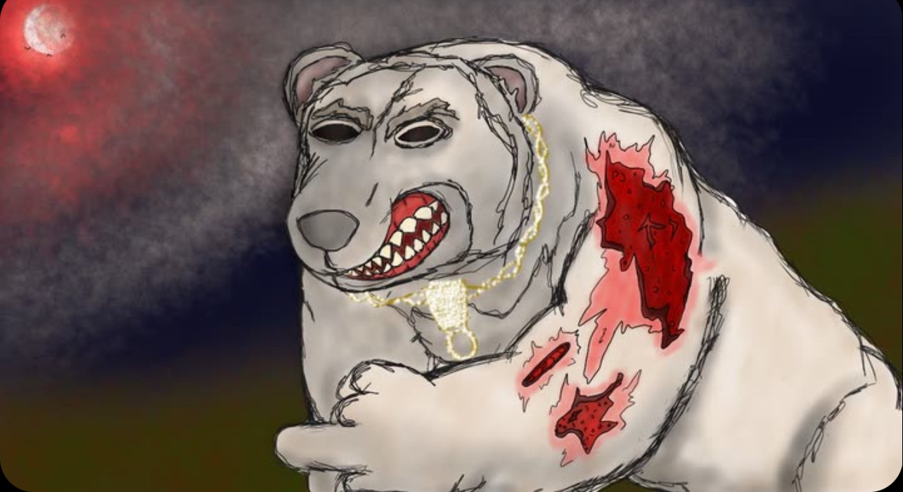

Burnt Bear
This was one of my favorites to draw. I really love drawing polar bears, I used to love draing people and figures in motions or just standing, so I started evolving that with all my other draings sometimes giving some creatures human like stances or poses. but with this drawing hes just standing up. I also really enjoy putting horns on some creatures I dont really know why I just enjoy it.
Dying Bear
I really liked drawing this one, because it was a different angle than im really used to drawing for polar bears. I also made him put up the finger because I thought it would be a lil goofy for him to be doing that, and it was a little challenge with the hands but i think i still did a pretty decent job.
Bear Open Mouth

This was one of my first attempts at drawig a bear with its mouth open, once again I think I did an alright job. I still wish i wouldve fixed it up a bit, but i wish I did that for all my works